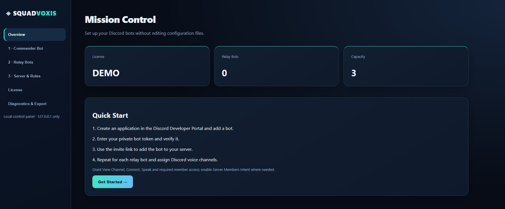

↗
01 — BROADCAST
Commander to squads
Issue a call from the command channel and relay it to all assigned squad voice rooms.
Connect Discord voice channels without mixing squads. One commander speaks to all teams and hears only authorized squad leaders. Everyone else stays in their own Discord voice room.
Keep squad communications focused while leadership stays connected. No one has to jump between voice channels to coordinate.
Issue a call from the command channel and relay it to all assigned squad voice rooms.
Only members assigned the squad-leader role are relayed back to command.
Regular players stay in their own squad channel. Other squads never receive that local conversation.
A guided setup for Discord bots, relay channels, roles and local voice controls. Designed for communities, not system administrators.
Preview of the developing Windows application. Features and visuals may change before release.

Set up a commander and relay bots using your own Discord applications. Tokens stay on your Windows machine.
Assign voice channels to individual squads. Scale from smaller groups to large events.
Choose who can command, manage the system and respond as a squad leader.
The voice engine runs on your PC, with no hosted voice subscription required from SquadVoxis.
Start with one squad free forever. Upgrade only when you need more rooms. Paid editions use one-time purchases; prices and availability are subject to launch confirmation.
Test the real voice routing before buying.
1 commander bot included
Commander & leader routing
GET FREE WINDOWS BUILD ↓For small teams getting coordinated.
1 commander bot included
Commander & leader routing
More squads. More coordination.
1 commander bot included
Commander & leader routing
For large communities and events.
1 commander bot included
Commander & leader routing
*No commercial relay cap on Premium. Actual capacity depends on your PC and Discord service limits. Plans and prices are preliminary; no purchases are enabled on this website.
Download the Windows edition to try one commander with one Discord voice room, including role-filtered squad-leader replies. No purchase key needed for Free.
Beta test build available now. Voice routing and automatic updates are still being validated on additional Windows PCs. Please report any issues.
The planned Windows edition runs its voice engine locally on your PC. You still need an internet connection to Discord.
In leader-filtered mode, only members with the designated squad-leader role are relayed back. Everyone can keep chatting within their own room.
Our goal is a guided setup with bot creation instructions, channel and role selection, and visual controls. Some steps in Discord's official developer portal are required.
The Free download section links to official GitHub Releases. The Windows 1.0.3 Beta installer is available now. Paid editions are not yet on sale.
SquadVoxis is being built for coordinated Discord communities. Free includes one commander and one Discord squad. The Windows 1.0.3 Beta installer is available in our download center.